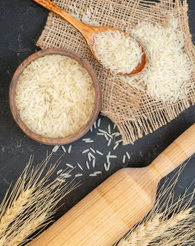
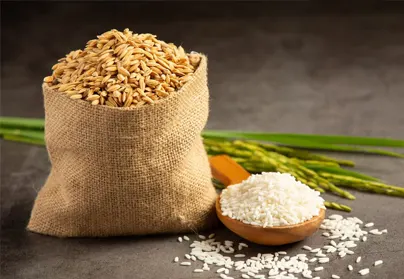
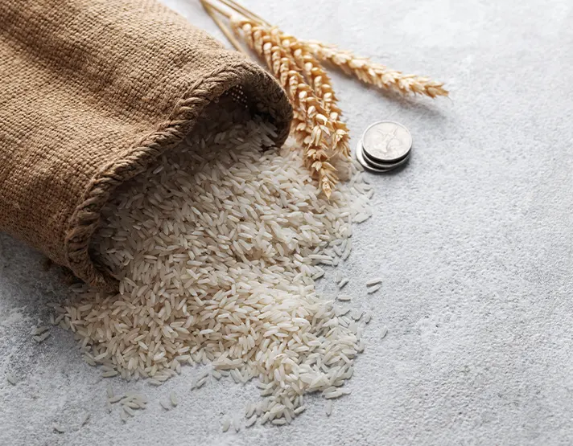
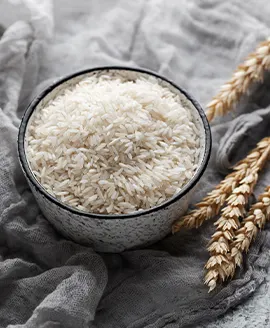
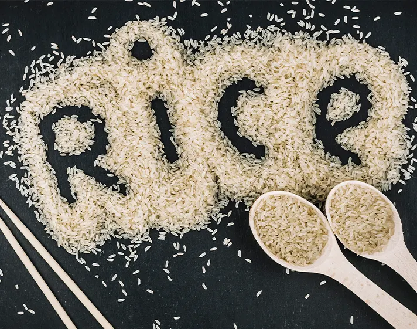
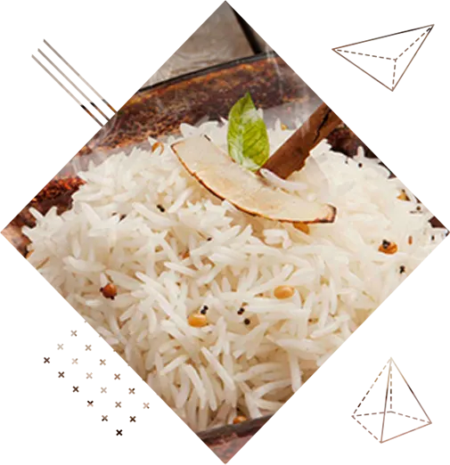

Understand the buyer
Market, channel, destination, volume and buying timeline shape the right product discussion.
UrbanFresh represents our family-operated manufacturing mill at Village Daha Madanpur, with three production units and a rice business history beginning in 1978.
Our mill story
The business began in 1978 and grew into three production units serving Indian and overseas buyers. The mill's work covers procurement, processing, quality control, packaging and commercial coordination.
Our rice range has reached buyers across more than 30 countries. The operating principle remains practical: understand the buyer's market, match the right rice and processing style, then confirm the specification and terms before production.


Our rice
These source images show the products and rice story behind the UrbanFresh buying conversation.




How we work
Market, channel, destination, volume and buying timeline shape the right product discussion.
Basmati, non-basmati, processing style and packaging are aligned with the intended use.
Specification, evidence, availability, price, packaging and dispatch are tied to the accepted order.
UrbanFresh uses your product, volume, pack and destination to start the mill conversation.